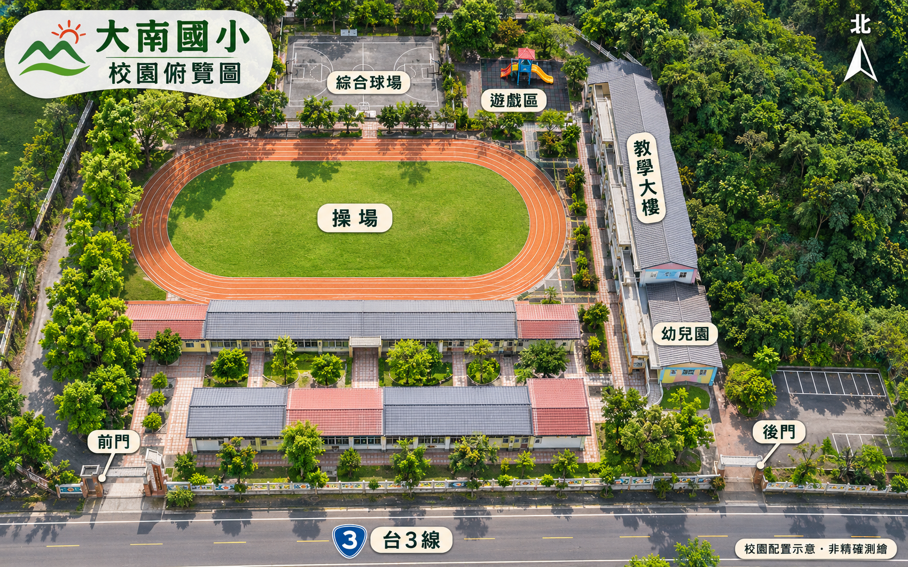

位置為俯視圖片上的建議站點，非 GPS 或測量座標。樓梯口、入口與特色植物區需現場確認；請在可通行處拍攝。一般手機的 4 張照片可做左右切換導覽，不必拍天空；不等於完整 360° 環景。

手機橫放看全圖；直放時可左右滑動地圖。標籤格式「站號 × 建議張數」，綠色表示你已勾選拍妥。
依 P01 → P18 順序補拍；點地圖標號查看拍攝內容。
位置為俯視圖片上的建議站點，非 GPS 或測量座標。樓梯口、入口與特色植物區需現場確認；請在可通行處拍攝。一般手機的 4 張照片可做左右切換導覽，不必拍天空；不等於完整 360° 環景。

手機橫放看全圖；直放時可左右滑動地圖。標籤格式「站號 × 建議張數」，綠色表示你已勾選拍妥。